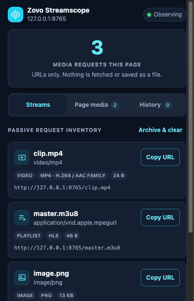

Passive per-tab inspector
See every
media URL.
Inventory MP4, HLS, images, audio, and video request metadata without downloading a file.
Container hintsContent lengthCopy URL

Inventory MP4, HLS, images, audio, and video request metadata without downloading a file.
